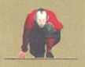

Düşlerimi
akıl sınırlarımın üstüne çıkaran,
duygularımı bilmediğim derinliklere yuvarlayan,
özgür olabilmem için beni çağıran,
bana rehberlik eden ve hepimizin içinde zaten var olan Dreamer'a...

“Bir Oluş Okulu kuracaksın,
Gerçekleştirecek düşü olanlar için bir Üniversite...
Bireylerin, Düş'ün var olan en gerçek şey olduğunu,
insanın gerçeklik olarak adlandırdığı şeyin,
kendi düşünün yansımasından
başka birşey olmadığını öğrenebilecekleri bir Okul.
Bir sorumluluk Okulu oluşturacaksın,
Uygulamacı düşleyenler, eylem filozofları için bir Okul,
mutluluğun ekonomi olduğunu, refahın, uyumun ve güzelliğin
her insanın doğuştan hakkı olduğunu öğrenecekleri bir Okul...
Sonu olmayan bir Okul oluşturacaksın...
Bir Tanrılar Okulu...
Bu Okul, Benim adımlarıma,
Benim nefesime sahip olacak.
Hiçbir saldırıdan korkma!
Dış dünyadan gelen her saldırı,
gerçekten anlamak ve değişmek isteyenler için
çok değerli bir armağandır.
En acımasız olanı dahil her zarar veren saldırı,sadece
kendi kendine düşleyip eyleme geçirdiğin
bir iyileşme süreci olarak meydana gelebilir."